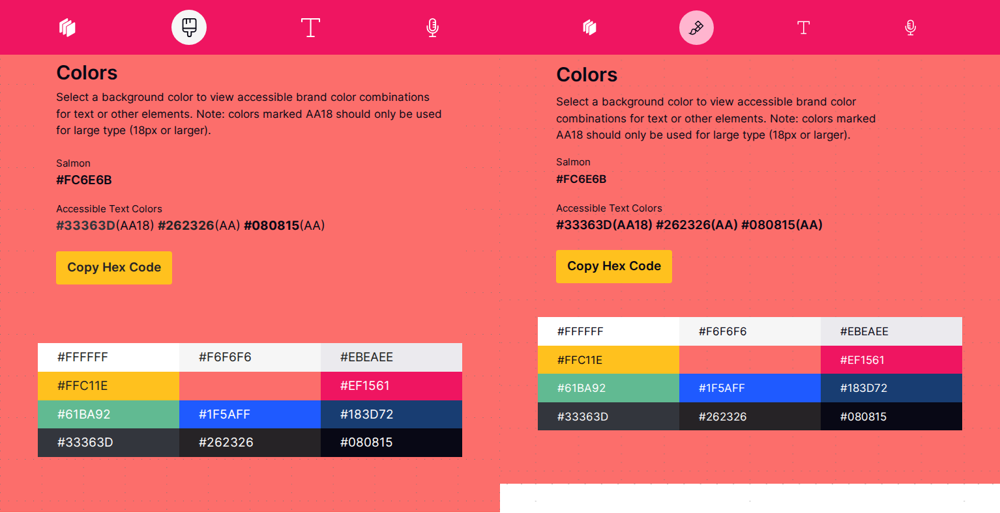
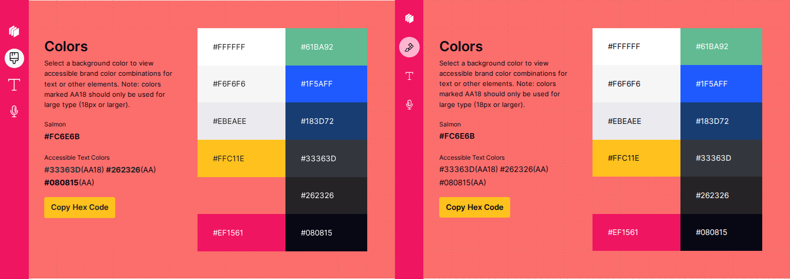
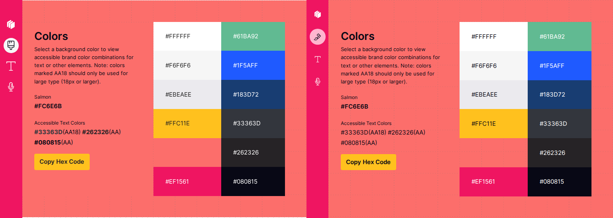
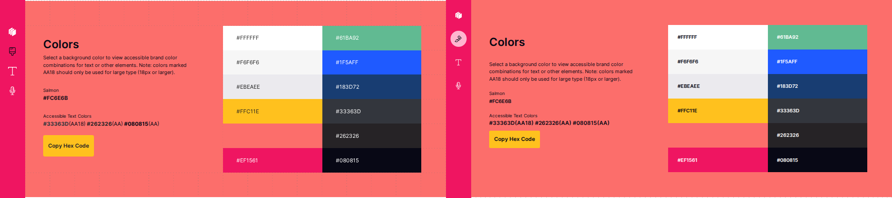

Read-only live reference. Palette-height crops are not full-page screenshots. Sticky-rail icon offsets and fine background/bold-label differences are not claimed equivalent.




Full1000px reference/native viewports are adjacent files. Canonical full-page comparisons: six-page gallery. Review report.